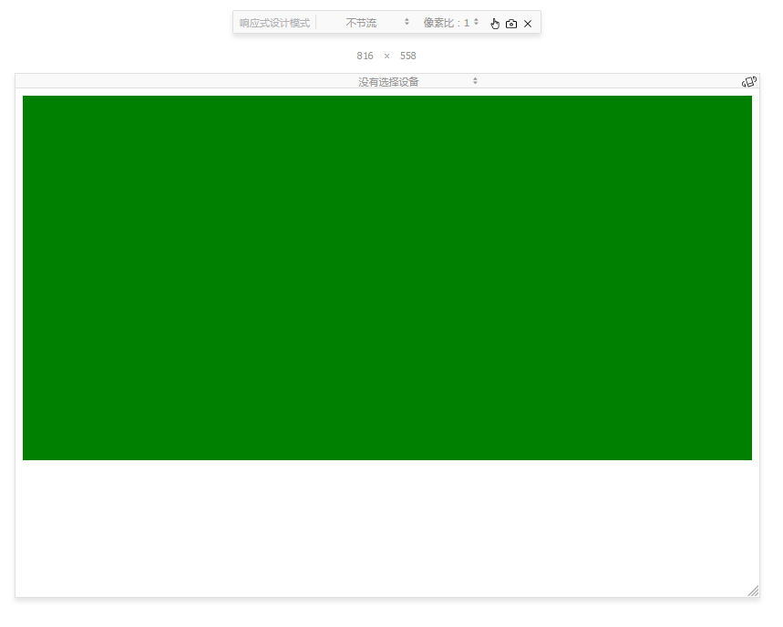
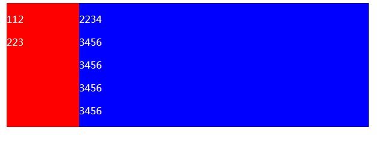

CSS margin 学习笔记
margin高度自适应
首选margin 和padding在数值为百分比的时候统一计算的是父元素的宽度。这里的一个小栗子是高度自适应。我们可以利用margin和padding来实现高度补全。
1 | <div style="width:50%;padding:25% 25%;background:green;"> |
效果如图：

一行布局
在通过margin和padding的配合可以实现一个两栏同高布局。代码如下：1
2
3
4
5
6
7
8
9
10
11
12
13
14
15
16
17
18
19
20
21
22
23
24
25
26
27
28
29
30
31
32
33
34
35
36
37<style type="text/css">
.container{
overflow: hidden;
max-width: 600px;
margin: 0 auto;
}
.column-left,.column-right{
margin-bottom: -9999px;
padding-bottom: 9999px;
}
.column-left{
background-color: red;
width: 20%;
float: left;
color: white;
}
.colunm-right{
background-color: blue;
width: 80%;
float: left;
color: white;
}
</style>
<div class="container">
<div class="column-left">
<p>112</p>
<p>223</p>
</div>
<div class="colunm-right">
<p>2234</p>
<p>3456</p>
<p>3456</p>
<p>3456</p>
<p>3456</p>
</div>
</div>

通过上面的代码可以看到，首先两栏分别都用了margin:-9999和padding:9999，margin的作用是将下面的元素提上来而padding正好又将元素压了下去，对于布局没有影响。但是9999px太高了所有使用overflow:hidden将元素多余的地方去掉。
margin 合并
什么是margin合并
块级元素的上外边距 和另一个块级元素的下外边距的margin有时候会合并为一个，叫做margin合并。
margin只发生在 1）块级元素2）垂直情况
如何解决
1、父元素设置为BFC
2、加上border-top/border-bottom（根据合并的上下位置而定）
3、加上padding-top/padding-bottom（根据合并的上下位置而定）
4、在合并的两个元素之间添加一个内联元素
5、为父元素设置高度
margin 水平居中
通常使用的 margin : 0 auto;对于块级元素管用，另外外部需要有宽度。另外margin-一侧缺失则是展现一侧对其效果。1
2
3
4
5<div style="width:300px; background-color:powderblue;overflow:hidden;">
<div style="width:100px;height:100px;margin-left:auto;background-color:orange;">
</div>
</div>
margin 无效
1、display为inline的非替换元素的margin值是无效的。
2、margin合并的时候更改margin可能无效除非比那两个值更大及引起重新计算。
3、margin需要更长的值才能有效，如图1
2
3
4
5
6
7
8<div style="width:300px; background-color:powderblue;overflow:hidden;">
<div alt="12" style="width:100px;height:100px;background-color:orchid;float:left;">
</div>
<div style="width:100px;height:100px;background-color:orange;margin-left:5px;overflow:hidden;">
</div>
</div>
上面左边是一个div元素但是float:left右边是一个div元素但是overflow:hidden;他的margin-left为5，之后我们将其改为超过左侧div的元素。
出现这种情况的原因在于首先左侧的元素float脱离了文档流，他脱离了文档流但是还是占用着内部空间，右边的那个元素清楚了浮动所以左边的元素还可以影响到右边的元素所以那个margin的值是从最左侧也就是父元素的值算起的。所以margin-left的值只有超过左侧的宽度才可以。